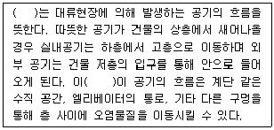
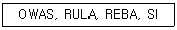
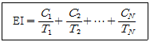
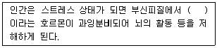
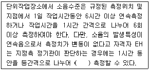
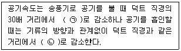
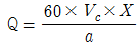
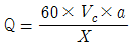
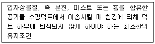

산업위생관리산업기사 (2018-04-28 기출문제)
1과목: 산업위생학 개론
1. 상시 근로자가 300명인 신발 제조업에서 산업안전보건법에 따라 선임하여야 하는 보건관리자에 관한 설명으로 맞는 것은?
- 선임하여야하는 보건관리자의 수는 1명이다.
- 보건관련 전공자 2명을 보건관리자로 선임하여야 한다.
- 보건관리자의 자격을 가진 2명의 보건관리자를 선임하여야 하며, 그 중 1명은 의사나 간호사이어야 한다.
- 보건관리자의 자격을 가진 3명의 보건관리자를 선임하여야 하며, 그 중 1명은 의사나 간호사이어야 한다.
(정답률: 71%)

2. 산업피로의 예방과 회복 대책으로 틀린 것은?
- 작업환경을 정리 정돈 한다.
- 커피, 홍차 또는 엽차를 마신다.
- 적절한 간격으로 휴식시간을 둔다.
- 작업속도를 가능한 늦게 하여 정적작업이 되도록 한다.
(정답률: 85%)
3. 다음의 설명에서 ( )안에 들어갈 용어로 맞는 것은?

- 연돌효과(stack effect)
- 균형효과(balance effect)
- 호손효과(hawthorne effect)
- 공기연령효과(air-age effect)
(정답률: 74%)
4. 직업성 질환을 인정할 때 고려해야 할 사항으로 틀린 것은?
- 업무상 재해라고 할 수 있는 사건의 유무
- 작업환경과 그 작업에 종사한 기간 또는 유해 작업의 정도
- 같은 작업장에서 비슷한 증상을 나타내는 환자의 발생 유무
- 의학상 특징적으로 나타나는 예상되는 임상검사 소견의 유무
(정답률: 58%)
5. 사업주는 사업장에 쓰이는 모든 대상 화학물질에 대한 물질안전보건자료를 취급 근로자가 쉽게 볼 수 있도록 비치 및 게시하여야 한다. 비치 및 게시를 하기 위한 장소로 잘못된 것은?
- 대상 화학물질 취급 작업 공정 내
- 사업장 내 근로자가 가장 보기 쉬운 장소
- 안전사고 또는 직업병 발생우려가 있는 장소
- 위급상황시 보건관리자가 바로 활용할 수 있는 문서보관실
(정답률: 85%)
6. 운반 작업을 하는 젊은 근로자의 약한 손(오른손잡이의 경우 왼 손)의 힘은 40kp이다. 이 근로자가 무게 10kg인 상자를 두손으로 들어 올릴 경우 적정 작업시간은 약 몇 분인가? (단, 공식은 671,120 × 작업강도-2.222를 적용한다.)
- 25분
- 41분
- 55분
- 122분
(정답률: 55%)
7. 다음 약어의 용어들은 무엇을 평가하는데 사용되는가?

- 직무 스트레스 정도
- 근골격계 질환의 위험요인
- 뇌심혈관계질환의 정략적 분석
- 작업장 국소 및 전체환기효율 비교
(정답률: 79%)
8. 산업위생분야에 관련된 단체와 그 약자를 연결한 것으로 틀린 것은?
- 영국 산업위생학회 - BOHS
- 미국 산업위생학회 - ACGIH
- 미국 직업안전위생관리국 - OSHA
- 미국 국립산업안전보건연구원 - NIOSH
(정답률: 48%)
9. 인간공학에서 적용하는 정적치수(static dimensions)에 관한 설명으로 틀린 것은?
- 동적인 치수에 비하여 데이터가 적다.
- 일반적으로 표(table)의 형태로 제시된다.
- 구조적 치수로 정적자세에서 움직이지 않는 피측정자를 인체 계측기로 측정한 것이다.
- 골격 치수(팔꿈치와 손목 사이와 같은 관절 중심거리 등)와 외곽치수(머리둘레 등)로 구성된다.
(정답률: 68%)
10. 산업안전보건법의 '사무실 공기관리 지침'에서 오염물질로 관리기준이 설정되지 않은 것은?
- 총 부유세균
- CO(일산화탄소)
- SO2(이산화황)
- CO2(이산화탄소)
(정답률: 66%)
11. 산업안전보건법령상 보건관리자의 자격과 선임제도에 대한 설명으로 틀린 것은?
- 상시 근로자가 100인 이상 사업장은 보건관리자의 자격기준에 해당하는 자 중 1인 이상을 보건관리자로 선임하여야한다.
- 보건관리대행은 보건관리자의 직무인 보건관리를 전문으로 행하는 외부기관에 위탁하여 수행하는 제도로 1990년부터 법적 근거를 갖고 시행되고 있다.
- 작업 환경 상에 유해요인이 상존하는 제조업은 근로자의 수가 2000명을 초과하는 경우에「의료법」에 따른 의사 또는 간호사인 보건관리자 1인을 포함하는 2인의 보건관리자를 선임하여야한다.
- 보건관리자의 자격기준은 의료법에 의한 의사 또는 간호사, 산업안전보건법에 의한 산업보건 지도사, 국가기술자격법에 의한 산업위생관리 산업기사 또는 환경관리산업기사(대기분야 한함) 등이다.
(정답률: 62%)
12. 미국 국립산업안전보건연구원에서는 중량물취급 작업에 대하여 감시기준(Actionlimit)과 최대허용기준(Maximum permissible limit)을 설정하여 권고하고 있다. 감시기준이 30kg일 때 최대허용기준은 얼마인가?
- 45kg
- 60kg
- 75kg
- 90kg
(정답률: 78%)
13. 인조견, 셀로판 등에 이용되고 실험실에서 추출용 등의 시약으로 쓰이고 장기간에 걸쳐 고농도로 폭로되면 기질적 뇌손상, 말초신경병, 신경행동학적 이상, 시각·청각장애 등이 발생하는 유기용제는 어느 것인가?
- 벤젠
- 사염화탄소
- 메타놀
- 이황화탄소
(정답률: 49%)
14. 화학물질이 2종 이상 혼재하는 경우, 다음 공식에 의하여 계산된 EI값이 1이 초과하지 아니하면 기준치를 초과하지 아니하는 것으로 인정할 때, 이 공식을 적용하기 위하여 각각의 물질 사이의 관계는 어떤 작용을 하여야 하는가? (단, C는 화학물질 각각의 측정치, T는 화학물질 각각의 노출기준을 의미한다.)

- 가승작용(potentiation)
- 상가작용(additive effect)
- 상승작용(synergistic effect)
- 길항작용(antagonistic effect)
(정답률: 76%)
15. 전신피로에 있어 생리학적 원인에 해당되지 않는 것은?
- 산소 공급부족
- 체내 젖산농도의 감소
- 혈중 포도당 농도의 저하
- 근육 내 글리코겐량의 감소
(정답률: 78%)
16. 호기적 산화를 도와서 근육의 열량공급을 원활하게 해주기 때문에 근육노동에 있어서 특히 주의해서 보충해 주어야 하는 것은?
- 비타민 A
- 비타민 C
- 비타민 B1
- 비타민 D4
(정답률: 87%)
17. 산업위생전문가가 지켜야 할 윤리강령 중 “기업주와 고객에 대한 책임”에 관한 내용에 해당하는 것은?
- 신뢰를 중요시하고, 결과와 권고사항을 정확히 보고한다.
- 산업위생전문가의 첫 번째 책임은 근로자의 건강을 보호하는 것임을 인식한다.
- 건강에 유해한 요소들을 측정, 평가, 관리하는데 객관적인 태도를 유지한다.
- 건강의 유해요인에 대한 정보와 필요한 예방대책에 대해 근로자들과 상담한다.
(정답률: 59%)
18. ILO와 WHO공동위원회의 산업보건에 대한 정의와 가장 관계가 적은 것은?
- 작업조건으로 인한 질병을 치료하는 학문과 기술
- 작업이 인간에게, 또 일하는 사람이 그 직무에 적합하도록 마련하는 것
- 근로자를 생리적으로나 심리적으로 적합한 작업환경에 배치하여 일하도록 하는 것
- 모든 직업에 종사하는 근로자들의 육체적, 정신적, 사회적 건강을 고도로 유지 증진시키는 것
(정답률: 72%)
19. 스트레스(STRESS)는 외부의 스트레스 요인(stressor)에 의해 신체에 항상성이 파괴되면서 나타나는 반응이다. 다음의 설명 중 ( )에 해당하는 용어로 맞는 것은?

- 코티졸(cortisol)
- 도파민(dopamine)
- 옥시토신(oxytocin)
- 아드레날린(adrenalin)
(정답률: 72%)
20. 작업에 소모된 열량이 4500kcal, 안정 시 열량이 1000kcal, 기초대사량이 1500kcal 일때, 실동률은 약 얼마인가? (단, 사이또(薺藤)와 오지마(大島)의 경험식을 적용한다.)
- 70.0%
- 73.3%
- 84.4%
- 85.0%
(정답률: 68%)
2과목: 작업환경측정 및 평가
21. 고체 포집법에 관한 설명으로 틀린 것은?
- 시료공기를 흡착력이 강한 고체의 작은 입자층을 통과시켜 포집하는 방법이다.
- 실리카겔은 산과 같은 극성물질의 포집에 사용되며 수분의 영향을 거의 받지 않으므로 널리 사용된다.
- 시료의 채취는 사용하는 고체입자층의 포집효율을 고려하여 일정한 흡입유량으로 한다.
- 포집된 유기물은 일반적으로 이황화탄소(CS2)로 탈착하여 분석용 시료로 사용된다.
(정답률: 66%)
22. 일반적인 사람이 느끼는 최소 진동역치는 얼마인가?
- 55±5 dB
- 70±5 dB
- 90±5 dB
- 1⑤±5 dB
(정답률: 79%)
23. 입자상 물질의 측정 방법 중 용접흄 측정에 관한 설명으로 옳은 것은? (단, 고용노동부 고시를 기준으로 한다.)
- 용접흄은 여과채취방법으로 하되 용접 보안면을 착용한 경우에는 보안면 반경 15cm 이하의 거리에서 채취한다.
- 용접흄은 여과채취방법으로 하되 용접 보안면을 착용한 경우에는 보안면 반경 30cm 이하의 거리에서 채취한다.
- 용접흄은 여과채취방법으로 하되 용접 보안면을 착용한 경우에는 그 내부에서 채취한다.
- 용접흄은 여과채취방법으로 하되 용접 보안면을 착용한 경우는 용접 보안면 외부의 호흡기 위치에서 채취한다.
(정답률: 51%)
24. 작업장 공기 중 사염화탄소(TLV=10PPM)가 5PPM, 1,2-디클로로에탄(TLV=50PPM)이 12PPM, 1,2-디브로메탄(TLV=20PPM)이 8PPM일 때 노출지수는? (단, 상가작용 기준)
- 1.04
- 1.14
- 1.24
- 1.34
(정답률: 74%)
25. 다음 중 중금속을 신속하고 정확하게 측정할 수 있는 측정기기는?
- 광학현미경
- 원자흡광광도계
- 가스크로마토그래피
- 비분산적외선 가스분석계
(정답률: 68%)
26. PercHloroethylene 40%(TLV:670mg/m3), Methylene chloride 40%(TLV:720mg/m3), Heptane 20%(TLV:1600mg/m3)의 중량비로 조성된 유기용매가 증발되어 작업장을 오염시키고 있다. 이들 혼합물의 허용농도는 약 몇 mg/m3인가?
- 910
- 997
- 876
- 780
(정답률: 58%)
27. 흡광광도법에서 단색광이 시료액을 통과하여 그 광의 50%가 흡수되었을 때 흡광도는?
- 0.6
- 0.5
- 0.4
- 0.3
(정답률: 66%)
28. 공기 중에 부유하고 있는 분진을 충돌 원리에 의해 입자크기별로 분리하여 측정할 수 있는 장비는?
- Cascade impactor
- personal distribution
- low volume sampler
- high volume sampler
(정답률: 71%)
29. 인쇄 또는 도장 작업에서 사용하는 페인트, 신나 또는 유성 도료 등에 의해 발생되는 유해인자 중 유기용제를 포집하는 방법은?
- 활성탄법
- 여과 포집법
- 직독식 분진측적계법
- 증류스 흡수액 임핀저법
(정답률: 58%)
30. 다음 중 측정기 또는 분석기기의 미비로 기인되는 것으로 실험자가 주의하면 제거 또는 보정이 가능한 오차는?
- 우발적 오차
- 무작위 오차
- 계통적 오차
- 시간적 오차
(정답률: 65%)
31. 음압이 100배 증가하면 음압 수준은 몇 dB 증가하는가?(오류 신고가 접수된 문제입니다. 반드시 정답과 해설을 확인하시기 바랍니다.)
- 10
- 20
- 30
- 40
(정답률: 54%)
32. 채취한 금속 분석에서 오차를 최소화하기 위해 여과지에 금속을 10㎍ 첨가하고 원자흡 광도계로 분석하였더니 9.5㎍이 검출되었다. 실험에 보정하기 위한 회수율은 몇%인가?
- 80
- 85
- 90
- 95
(정답률: 65%)
33. 온도 27℃인 때의 체적이 1m3인 기체를 온도 127℃까지 상승시켰을 때의 체적은?
- 1.13m3
- 1.33m3
- 1.47m3
- 1.73m3
(정답률: 56%)
34. 지역시료 채취방법과 비교한 개인시료 채취방법의 장점으로 옳은 것은?
- 오염물질의 방출원을 찾아내기 쉽다
- 작업자에게 노출되는 정도를 알 수 있다
- 어떤 장소의 고정된 위치에서 시료를 채취하기 때문에 경제적이다
- 특정 공정의 계절별 농도변화, 농도분포의 변화, 공의 주기별 농도 변화를 알 수 있다.
(정답률: 64%)
35. 다음 중 실리카겔에 대한 친화력이 가장 큰 물질은?
- 파라핀계
- 에스테르류
- 알데하이드류
- 올레핀류
(정답률: 72%)
36. 다음 중 기류측정과 가장 거리가 먼 것은?
- 풍차풍속계
- 열선풍속계
- 카타온도계
- 아스만통풍건습계
(정답률: 57%)
37. 다음은 작업장 소음 측정시간 및 횟수 기준에 관한 내용이다. ( )안에 내용으로 옳은 것은? (단, 고용노동부 고시를 기준으로 한다.)

- 2회 이상
- 3회 이상
- 4회 이상
- 5회 이상
(정답률: 46%)
38. 흡착제 중 다공성 중합체에 관한 설명으로 틀린 것은?
- 활성탄보다 비표면적이 작다
- 특별한 물질에 대한 선택성이 좋다
- 활성탄보다 흡착용량이 크며 반응성도 높다
- Tenax GC 열안정성이 높아 열탈착에 의한 분석이 가능하다
(정답률: 49%)
39. 2N-HCI 용액 100ML를 이용하여 0.5N 용액을 조제하려할 때 희석에 필요한 증류수의 양은?
- 100ML
- 200ML
- 300ML
- 400ML
(정답률: 24%)
40. 다음 중 1 PPM과 같은 것은?
- 0.01%
- 0.001%
- 0.0001%
- 0.00001%
(정답률: 66%)
3과목: 작업환경관리
41. 작업장 소음에 대한 차음효과는 벽체의 단위 표면적에 대하여 벽체의 무게를 2배로 할때 마다 몇 dB씩 증가하는가?
- 3
- 6
- 9
- 12
(정답률: 67%)
42. 분진작업장의 작업환경 관리대책 중 분진발생 방지나 분진비산 억제대책으로 가장 적절한 것은?
- 작업의 강도를 경감시켜 작업자의 호흡량을 감소
- 작업자가 착용하는 방진마스크를 송기마스크로 교체
- 광석 분쇄·연마 작업 시 물을 분사하면서 하는 방법으로 변경
- 분진발생공정과 타공정을 교대로 근무하게 하여 노출시간 감소
(정답률: 72%)
43. 진동방지대책 중 발생원에 관한 대책으로 가장 옳은 것은?
- 거리감쇠를 크게 한다.
- 수진측에 탄성지지를 한다.
- 수진점 근방에 방진구를 판다.
- 기초중량을 부가 및 경감한다.
(정답률: 49%)
44. 폐에 깊숙이 들어갈 수 있는 호흡성섬유라한다. 이 섬유의 길이와 길이 대 너비의 비로 가장 적절한 것은?
- 길이 1㎍ 이상, 길이 대 너비의 비 5:1
- 길이 3㎍ 이상, 길이 대 너비의 비 2:1
- 길이 3㎍ 이상, 길이 대 너비의 비 5:1
- 길이 5㎍ 이상, 길이 대 너비의 비 3:1
(정답률: 49%)
45. 다음 중 수은 작업장의 작업환경관리대책으로 가장 적합하지 못한 것은?
- 수은 주입과정을 자동화시킨다.
- 수거한 수은은 물과 함께 통에 보관한다.
- 수은은 쉽게 증발하기 때문에 작업장의 온도를 80℃로 유지한다.
- 독성이 적은 대체품을 연구한다.
(정답률: 68%)
46. 상온, 상압에서 액체 EH는 고체 물질이 증기압에 따라 휘발 또는 승화하여 기체로 되는 것은?
- 흄
- 증기
- 가스
- 미스트
(정답률: 61%)
47. 다음 중 투과력이 가장 강한 것은?
- X-선
- 중성자
- 감마선
- 알파선
(정답률: 67%)
48. 근로자가 귀덮개(NRR=31)를 착용하고 있는 경우 미국 OSHA의 방법으로 계산한다면, 차음효과는 몇 dB인가?
- 5
- 8
- 10
- 12
(정답률: 65%)
49. 다음 중 채광에 관한 일반적인 설명으로 틀린 것은?
- 입사각은 28° 이하가 좋다.
- 실내각점의 개각은 4~5°가 좋다.
- 창의 면적은 바닥면적의 15~20%가 이상적이다.
- 균일한 조명을 요하는 작업실은 동북 또는 북창이 좋다.
(정답률: 55%)
50. 다음 작업환경관리의 관리 원칙 중 격리에 대한 내용과 가장 거리가 먼 것은?
- 도금조, 세척조, 분쇄기 등을 밀폐한다.
- 페이느분무를 담그거나 전기 흡착식방법으로 한다.
- 소음이 발생하는 경우 방음과 흡음재를 보강한 상자로 밀폐한다.
- 고압이나 고속회전이 필요한 기계인 경우 강력한 콘크리트 시설에 방호벽을 쌓고 원격조정한다.
(정답률: 67%)
51. 진동에 관한 설명으로 틀린 것은?
- 진동량은 변위, 속도, 가속도로 표현한다.
- 진동의 주파수는 그 주기현상을 가리키는 것으로 단위는 Hz이다.
- 전신진동 노출 진동원은 주로 교통기관, 중장비차량, 큰 기계 등이다.
- 전신진동인 경우에는 8~1500Hz, 국소진동의 경우에는 2~100Hz의 것이 주로 문제가 된다.
(정답률: 71%)
52. 자외선은 살균작용, 각막염, 피부암 및 비타민D 합성에 밀접한 관계가 있다. 이 자외선의 가장 대표적인 광선을 Dorno-Ray라 하는데 이광선의 파장으로 가장 적절한 것은?
- 280~315Å
- 390~515Å
- 2800~3150Å
- 3900~5700Å
(정답률: 54%)
53. 출력 0.1W의 점음원으로부터 100m 떨어진 곳의 SPL은? (단, SPL=PWL-20log r-11)
- 약 50dB
- 약 60dB
- 약 70dB
- 약 80dB
(정답률: 55%)
54. 유해작업환경 개선 대책 중 대체에 해당되는 내용으로 옳지 않은 것은?
- 보온재료 유리섬유 대신 석면 사용
- 소음이 많이 발생하는 리벳팅 작업 대신 너트와 볼트작업으로 전환
- 성냥제조 시 황린 대신 적린 사용
- 작은 날개로 고속 회전시키는 송풍기를 큰 날개로 저속 회전시킴
(정답률: 67%)
55. 고기압 환경에서 발생할 수 있는 장해에 영향을 주는 화학물질과 가장 거리가 먼 것은?
- 산소
- 질소
- 아르곤
- 이산화탄소
(정답률: 67%)
56. 감압환경에서 감압에 따른 질소기포 형성량에 영향을 주는 요인과 가장 거리가 먼 것은?
- 감압속도
- 폐내 가스팽창
- 조직에 용해된 가스량
- 혈류를 변화시키는 상태
(정답률: 60%)
57. 방진마스크의 종류가 아닌 것은?
- 특급
- 0급
- 1급
- 2급
(정답률: 76%)
58. 방진마스크의 구비조건으로 틀린 것은?
- 흡기저항이 높을 것
- 배기저항이 낮을 것
- 여과재 포집효율이 높을 것
- 착용 시 시야 확보가 용이 할 것
(정답률: 65%)
59. 다음 중 전리방사선이 아닌 것은?
- 알파선
- 베타선
- 중성자
- UV-선
(정답률: 70%)
60. 다음 중 대상먼지와 같은 침강속도를 가지며 밀도가 1인 가상적인 구형 입자상물질의 직경은?
- 마틴직경
- 등면적직경
- 공기역학적직경
- 공기기하학적직경
(정답률: 61%)
4과목: 산업환기
61. 직경이 3㎍이고, 비중이 6.6인 흄(FUME)의 침강속도는 약 몇 cm/s인가?
- 0.01
- 0.12
- 0.18
- 0.26
(정답률: 64%)
62. 21℃, 1기압에서 벤젠 1.5L가 증발할 때, 발생하는 증기의 용량은 약 몇 L인가?(단, 벤젠의 분자량은 78.11, 비중은 0.879이다.)
- 3⑤.1
- 406.8
- 457.7
- 542.2
(정답률: 39%)
63. 다음 설명 중 ( )안의 내용으로 올바르게 나열한 것은?

- ㉠ : 1/10, ㉡ : 1/10
- ㉠ : 1/10, ㉡ : 1/30
- ㉠ : 1/30, ㉡ : 1/30
- ㉠ : 1/30, ㉡ : 1/10
(정답률: 53%)
64. 작업환경 개선을 위한 전체환기 시설의 설치조건으로 적절하지 않는 것은?
- 유해물질 발생량이 많아야 한다.
- 유해물질 발생량이 비교적 균일해야 한다.
- 독성이 낮은 유해물질을 사용하는 장소여야 한다.
- 공기 중 유해물질의 농도가 허용농도 이하여야 한다.
(정답률: 72%)
65. 화재·폭발방지를 위한 전체환기량 계산에 관한 설명으로 틀린 것은?
- 화재·폭발 농도 하한치를 활용한다.
- 온도에 따른 보정계수는 120℃ 이상의 온도에서는 0.3을 적용한다.
- 공정의 온도가 높으면 실제 필요환기량은 표준환기량에 대해서 절대온도에 따라 재계산 한다.
- 안전계수가 4라는 의미는 화재·폭발이 일어날 수 있는 농도에 대해 25%이하로 낮춘다는 의미이다.
(정답률: 51%)
66. 송풍기의 효율이 0.6이고, 송풍기의 유효전압이 60mmH2O 일 때, 30m3/min의 공기를 송풍하는데 필요한 동력(KW)은 약 얼마인가?
- 0.1
- 0.3
- 0.5
- 0.7
(정답률: 43%)
67. 국소배기장치가 효과적인 기능을 발휘하기위해서는 후드를 통해 배출되는 것과 같은 양의 공기가 외부로부터 보충되어야 한다. 이것을 무엇이라 하는가?
- 테이크 오프(take off)
- 충만실(plenum chamber)
- 메이크업 에어(make up air)
- 인 앤 아웃 에어(in & out air)
(정답률: 64%)
68. 국소배기장치의 덕트를 설계하여 설치하고자한다. 덕트는 직경 200mm의 직관 및 곡관을 사용하도록 하였다. 이 때 마찰손실을 감소시키기 위하여 곡관부위의 새우 곡관등은 최소 몇 개 이상이 가장 적당한가?
- 2개
- 3개
- 4개
- 5개
(정답률: 56%)
69. 전기집진장치에 관한 설명으로 틀린 것은?
- 운전 및 유지비가 저렴하다.
- 넓은 범위의 입경과 분진농도에 집진효율이 높다.
- 기체상의 오염물질을 포집하는데 매우 유리하다.
- 초기 설치비가 많이 들고, 넓은 설치공간이 요구된다.
(정답률: 48%)
70. 반경비가 2.0인 90° 원형곡관의 속도압은 20mmH2O 이고, 압력손실계수가 0.27이다. 이 곡관의 곡관각을 65°로 변경하면, 압력손실은 얼마인가?
- 3.0mmH2O
- 3.9mmH2O
- 4.2mmH2O
- 5.4mmH2O
(정답률: 34%)
71. 국소환기 시설의 일반적인 배열순서로 가장 적합한 것은?
- 덕트-후드-송풍기-공기정화기
- 후드-송풍기-공기정화기-덕트
- 덕트-송풍기-공기정화기-후드
- 후드-덕트-공기정화기-송풍기
(정답률: 75%)
72. 가스, 증기, 흄 및 극히 가벼운 물질의 반송속도(m/s)로 가장 적합한 것은?
- 5~10
- 15~10
- 20~23
- 23이상
(정답률: 63%)
73. 필요송풍량을 Q(m3/min), 후드의 단면적을 a(m2), 후드면과 대상물질 상이의 거리를 X(m) 그리고 제어속도를 Vc(m/s)라 했을 때, 관계식으로 맞는 것은? (단, 형식은 외부식이다.)


- Q = 60 × X × a × Vc
- Q = 60 × Vc × (10X2 + a)
(정답률: 59%)
74. 표준상태에서 동압(Pv)이 4mmH2O라면, 관내유속은? (단, 공기의 밀도량 1.21kg/S·m3이다.)
- 5.1m/sec
- 5.3m/sec
- 5.5m/sec
- 8.0m/sec
(정답률: 37%)
75. 외부식 포집형 후드에 플랜지를 부착하면 부착하지 않은 것보다 약 몇 %정도의 필요송풍량을 줄일 수 있는가?
- 10%
- 25%
- 50%
- 75%
(정답률: 68%)
76. 다음의 내용과 가장 관련 있는 것은?

- 반송속도
- 덕트 내 정압
- 공기 팽창률
- 오영물질 제거율
(정답률: 64%)
77. 송풍기에 관한 설명으로 맞는 것은?
- 프로펠러 송풍기는 구조가 가장 간단하지만, 많은 양의 공기를 이송시키기 위해서는 그 만큼의 많은 비용이 소요된다.
- 저농도 분진함유공기나 금속성이 많이 함유된 공기를 이송시키는데 많이 이용되는 송풍기는 방사 날개형 송풍기(평판형 송풍기)이다.
- 동일 송풍량을 발생시키기 위한 전향 날개형 송풍기의 임펠러 회전속도는 상대적으로 낮기 때문에 소음문제가 거의 발생하지 않는다.
- 후향 날개형 송풍기는 회전날개가 회전방향 반대편으로 경사지게 설계되어 있어 충분한 압력을 발생시킬 수 있고, 전향 날개형 송풍기에 비해 효율이 떨어진다.
(정답률: 43%)
78. 유입계수가 0.6인 플랜지 부착 원형후드가 있다. 덕트의 직경은 10cm이고, 필요환기량이 20m3/min라고 할 때, 후드정압(SPh)은 약 몇 mmH2O인가?
- -448.2
- -306.4
- -236.4
- -110.2
(정답률: 39%)
79. 공기정화장치 입구 및 출구의 정압이 동시에 감소되는 경우의 원인으로 맞는 것은?
- 송풍기의 능력 저하
- 분지관과 후드 사이의 분진 퇴적
- 주관과 분지관 사이의 분진 퇴적
- 공기정화장치 앞쪽 주관의 분진 퇴적
(정답률: 54%)
80. 후드직경(F3), 열원과 후드까지의 거리(H), 열원의 폭(E)간의 관계를 가장 적절히 나타낸 식은? (단, 레시바식 캐노피 후드 기준이다.)
- F3 = E + 0.3H
- F3 = E + 0.5H
- F3 = E + 0.6H
- F3 = E + 0.8H
(정답률: 44%)